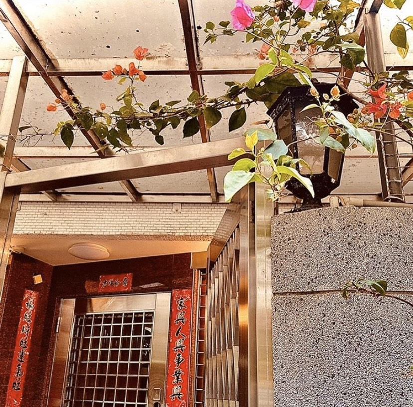
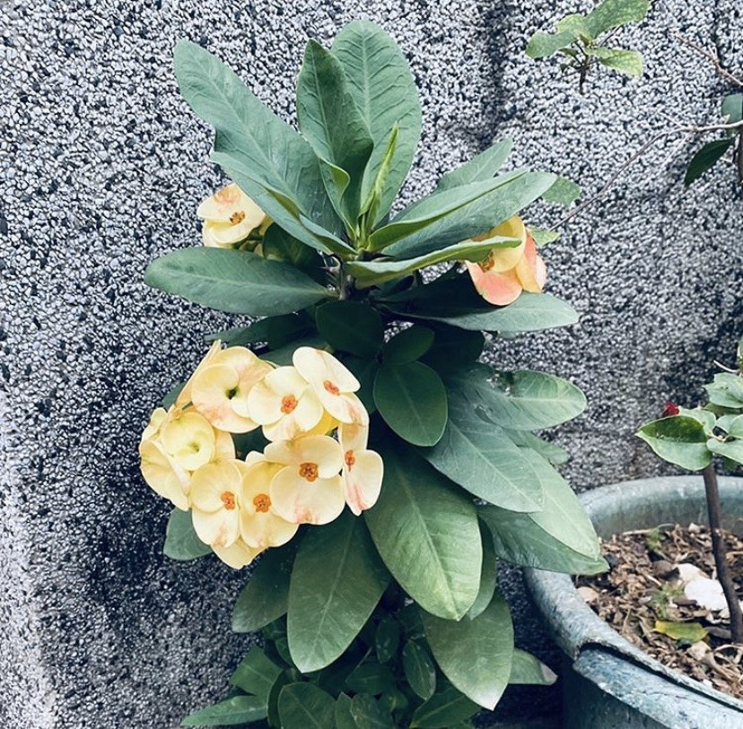

作品Gallery
油畫—家鄉 高中的寫生畫作

拍攝-天空平溪的攝影作品

拍攝-街景溫暖的家門口

拍攝/園藝堅韌的炒蛋花

拍攝-水面夜晚的湖面

拍攝-小物早上起床的樣子

烹飪 假面栗子蒙布朗

烹飪家和萬事興 煮飯不容易

烹飪甜蜜蜜生乳捲
喜歡吃拉麵、咖哩飯、布丁、泡芙、蘋果。做各種常見的瑜珈，拼1000片以上的拼圖，讓頭腦活動。平常最喜把時間排得滿滿的，忙碌的時間表我生活的軌跡。大自然就是我的好朋友，喜歡跟貓貓狗狗玩。
今年的傳播技能展，我擔任美宣公關組的組員，負責經營臉書專頁。這次主題名取名為「導夢少年」，訪問並蒐集了許多人的夢想，再透過社群平台讓群眾看見。希望藉此激勵大家能在成長的路上，一步步靠近自己的夢想。
民俗舞蹈社，顧名思義就是跳民族舞蹈的。在這個新興許多創意舞風、流行舞當道的時代，不少人會遺忘了傳統民俗舞的美。蒙古舞、印度舞、中國舞等都是本社團致力研究的，希望透過表演，讓這類型舞蹈再次重現。
康輔社是個溫暖的大家庭，在社團中，大家必須同心協力去辦好一項活動。經過一次次的活動經驗，每個人的溝通能力、心智成熟、和辦活動能力都有所成長。是個適合從中學習經驗的優質社團，經過三年歷練，整個人都社會化了。
擔任活動總召是個很大的挑戰，我也從中學到了很多經驗，包括廠商接洽、安撫夥伴心情、準備2個備用計畫、應對突發狀況等等。一個看似簡單的活動，背後實際要付出的人資和心力可真不少。
平常興趣是到處尋找好吃的美食，也喜歡自己動手做菜，會在家烘焙蛋糕和做簡單幾道菜和家人朋友小聚。在家很無聊但不想出門的時候，我會坐窗台旁的小沙發上看小說和電影，看完之後再寫下心得想法。當缺乏運動，必須出門透氣時，就會去健身房重訓，讓自己不要太廢，變成一塊只會呼吸的爛泥。
大學要完成的事情
| 預計達成時間 | 項目 | 備註 |
|---|---|---|
| 2020 | 考英文檢定證照 | 多益或托福 |
| 2021 | 學會騎腳踏車 | 考上駕照也行 |
| 2022 | 出國交換學生 | 寒暑假的也可 |
| 2022 | 到大公司實習 | 有實習機會就好 |
| 2023 | 考上研究所 | 或是先工作一年 |
| 2024 | 出國遊學 | 當背包客一年也不錯 |
油畫—家鄉 高中的寫生畫作
拍攝-天空平溪的攝影作品
拍攝-街景溫暖的家門口
拍攝/園藝堅韌的炒蛋花
拍攝-水面夜晚的湖面
拍攝-小物早上起床的樣子
烹飪 假面栗子蒙布朗
烹飪家和萬事興 煮飯不容易
烹飪甜蜜蜜生乳捲